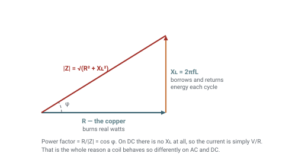
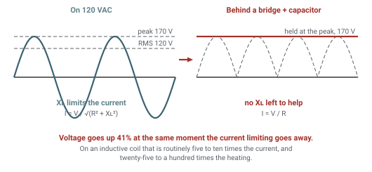
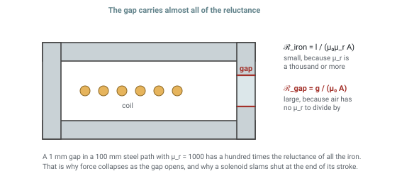
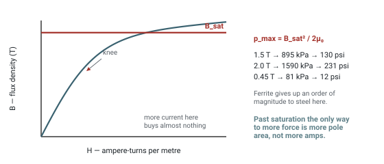
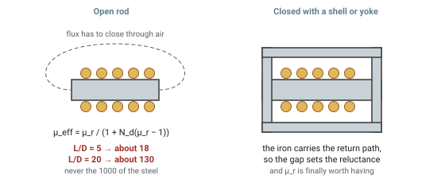
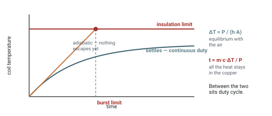

Solenoid and Electromagnet Coil Designer — Turns, Impedance, Pull Force and Thermal Duty
Wind a coil on paper and find out what it takes to drive it. Turns and resistance come from the AWG magnet wire and the winding window; inductance and impedance decide how much current the supply will actually push; ampere-turns and the working gap set the force; and the dissipation decides whether it runs continuously, intermittently, or for four seconds.
Worked calculation
Or use a permanent magnet instead
What Actually Limits the Current
On DC nothing limits the current but copper. It is V/R, the resistance is set by how much wire is on the bobbin, and the only ways to draw less are more turns, thinner wire, or a series resistor.
On AC the winding also has reactance, and the two do not add — they combine at right angles.
That is why a coil which would draw twenty amps across a DC supply can sit quite happily on 120 VAC: at 60 Hz the reactance is doing the limiting and the copper is barely involved. It is also why the power factor is poor — most of the volt-amps are borrowed and handed back each cycle rather than consumed.

The impedance triangleMains, and What a Rectifier Changes
A coil designed to be reactance-limited on mains is one with a large inductance and a small resistance. Put a bridge rectifier in front of it and the reactance stops helping: the winding now sees something close to DC, and the current settles at V/R — which is exactly what the reactance had been protecting it from.
Running the same coil on 120 V and 240 V is the same question in reverse: double the voltage, double the current, four times the heat. A coil is only dual-voltage if it has two windings or a series element sized for the difference.

What a rectifier changesTurns, Wire and Fill
Turns come from how much insulated wire fits the winding window, not from the bare copper. The fill factor carries everything the geometry does not: winding method, interleaving, how hard the wire was tensioned.
Copper's tempco is 0.393% per kelvin, so a winding at 155 °C carries about 53% more resistance than the same winding on the bench. On a DC coil that is self-limiting and helpful; on an AC coil it barely matters because the reactance dominates.
Ampere-turns are the honest measure of drive: 500 At is 500 At whether it is 500 turns at 1 A or 50 turns at 10 A. The split between them decides the voltage and the wire size, not the magnetics.
What the split does decide is heat. For a given window, halving the wire area doubles the resistance and doubles the dissipation at the same ampere-turns — so the efficient direction is always more copper, not more current.
Where the Force Comes From
Ampere-turns drive the magnetic circuit, the circuit's reluctance decides how much flux that produces, and flux squared is what pulls. For a flat armature across a working gap the Maxwell stress is
Two consequences are worth internalising. Force falls roughly as 1/g², so a solenoid is weak when open and slams shut at the end of its stroke. And force goes as the square of current, right up until the iron saturates — at which point it stops responding at all.

Why the gap dominates- Ampere-turns — the actual drive, independent of how you split turns against current.
- Pressure on the pole face — force per unit area, so it does not change when you scale the pole, and it compares directly against the saturation ceiling.
- Ampere-turns per watt — the efficiency of the winding, and the number that improves with more copper rather than more current.
Saturation Is the Ceiling
Once the iron is saturated, extra ampere-turns produce almost no extra flux. Substituting Bsat into the Maxwell expression gives a hard upper bound on pressure that no amount of current can beat.
| Core | Bsat | Max pressure | psi |
|---|---|---|---|
| Low-carbon steel | 2.0 T | 1590 kPa | 231 |
| M19 silicon steel | 1.95 T | 1510 kPa | 219 |
| 430FR stainless | 1.4 T | 780 kPa | 113 |
| Iron powder, -26 | 1.2 T | 573 kPa | 83 |
| MnZn ferrite | 0.45 T | 81 kPa | 12 |

Saturation and the force ceilingOpen Cores Are Weaker Than the Datasheet
A bare rod core does not deliver its material permeability. Free poles at its ends set up a field opposing the one the coil is driving, and the effective permeability collapses.
where Nd is the demagnetising factor, set by how long and thin the core is. A 1000-µ steel rod at a length-to-diameter ratio of 5 behaves like a permeability of about 18. At L/D of 20 it reaches roughly 130. It never approaches 1000 unless the circuit is closed with a shell or a yoke — which is precisely why real solenoids have one.

Open rod against a closed yokeHeat Decides What Is Buildable
A coil is a resistor that happens to make a magnetic field, and almost every coil that fails, fails thermally. There are two regimes and they want different arithmetic.
The convection coefficient is the weak link: roughly 8–12 W/m²K for a bare coil in still air, 15–25 bolted to metal that can sink the heat, 50 and up with forced air. It scales the temperature rise directly, so it deserves more thought than any other input on the page.
For the first seconds essentially none of the heat escapes, so all of it raises the temperature of the copper. Copper's specific heat is 385 J/kg·K, so a 40 g winding absorbs about 2 kJ before it has risen 130 K — forty seconds at 50 W, four seconds at 500 W. That is the number that answers "how long can I throw this little coil across 120 V".

Continuous and burst thermal limitsLimitations
- Lumped magnetic circuit. Flux is assumed to follow one path and cross a uniform gap inside the pole footprint. Once the gap approaches the pole diameter that stops being true: the flux fringes and leaks, and the figure becomes an optimistic upper bound rather than an estimate.
- No eddy currents or hysteresis. A solid steel core on AC loses real power to both and shields its own interior, so the true inductance is lower and the true dissipation higher. Laminate it, or treat the AC numbers as a first pass.
- Static force only. Nothing here models the stroke, the inrush before the armature moves, or the way inductance climbs as the gap closes.
- One thermal mass. The burst calculation counts only the copper. A bobbin, core and housing add thermal mass and buy time, so the real burst is longer — conservative, but only roughly.
- Film build is nominal. Heavy-build magnet wire dimensions vary between suppliers; the fill factor is the knob that absorbs the difference.